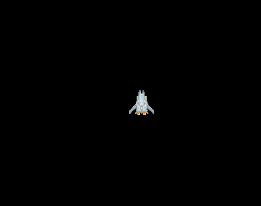

はじめに
前回は、ゲームで使うアセットの読み込みまで行いました。今回は、プレイヤーをキーボードで操作できるようにします。
プレイヤーの移動
Unityでは、コードを実行する場合、ゲームオブジェクトにスクリプトをアタッチする方法をとりますが、phina.jsでは、オブジェクト専用のクラスを作成する方法が一般的です。
プレイヤークラス
今回は、プレイヤークラスを以下のとおり実装しました。
/*
* プレイヤークラス
*/
phina.define("Player", {
// 継承
superClass: 'Sprite',
// 初期化
init: function() {
// 親クラス初期化
this.superInit('spaceship', 64, 64);
// フレームアニメーションをアタッチ
FrameAnimation('spaceship').attachTo(this).gotoAndPlay('player');
// 移動スピード
this.speed = 5;
},
// 毎フレーム更新処理
update: function(app) {
// 移動する向きを求める
var direction = app.keyboard.getKeyDirection();
// 移動する向きとスピードを代入する
this.moveBy(direction.x * this.speed, direction.y * this.speed);
},
});
クラス宣言
phina.define("Player", {
// 継承
superClass: 'Sprite',
- クラス宣言は、defineで行います。次の文字列はクラス名です。
- superClassで継承元の親クラスを指定します。自機はスプライト画像を使うので、親クラスにSpriteクラスを指定しています。
init関数
一般的にコンストラクと呼ばれるもので、UnityにおけるStartと同じ役割です。
// 初期化
init: function() {
// 親クラス初期化
this.superInit('spaceship', 64, 64);
// フレームアニメーションをアタッチ
FrameAnimation('spaceship').attachTo(this).gotoAndPlay('player');
// 移動スピード
this.speed = 5;
},
- superInitで親クラスのSpriteを初期化しています。第一引数はスプライト画像のアセット名で、第二、第三引数にスプライト画像の切り出しサイズを指定しています。
- FrameAnimationを作成し、this(Player)にアタッチしています。この辺りは、Unityのコンポーネントに近いです。
- gotoAndPlayで、先に定義したアニメーションを再生しています。
Update関数
毎フレーム呼ばれるもので、UnityにおけるUpdateと同じです。
// 毎フレーム更新処理
update: function(app) {
// 移動する向きを求める
var direction = app.keyboard.getKeyDirection();
// 移動する向きとスピードを代入する
this.moveBy(direction.x * this.speed, direction.y * this.speed);
},
});
- 引数のapp経由で色々な情報にアクセスできますが、今回使用するkeyboardもその１つです。
- getKeyDirectionで、現在押されている方向キーの方向を以下のVector2クラスの形式で得ることができます。キーが同時に押されていると、正規化された値が返ってきます。
| 方向キー | 値 |
|---|---|
| 上 | Vector2(0, -1) |
| 下 | Vector2(0, 1) |
| 左 | Vector2(-1, 0) |
| 右 | Vector2(1, 0) |
- 変数directionに上記のいずれかが入ってきますので、direction.xとdirection.yでそれぞれの方向に分けてスピードを乗じて、移動量を求めます。
- 最後にmoveBy関数に移動量を与えて、プレイヤーの位置を更新しています。
シーンにプレイヤーを追加する
プレイヤークラスを実装しましたので、プレイヤーをシーンに追加します。
// プレイヤー
var player = Player().addChildTo(this);
player.setPosition(this.gridX.center(), this.gridY.center(3));
プレイヤーの位置指定には、Gridを使っています。Gridについては、【phina.js】Gridクラスを使いこなそうを参考にして下さい。
実行サンプル
左側の実行画面で方向キーでプレイヤーが操作できます。